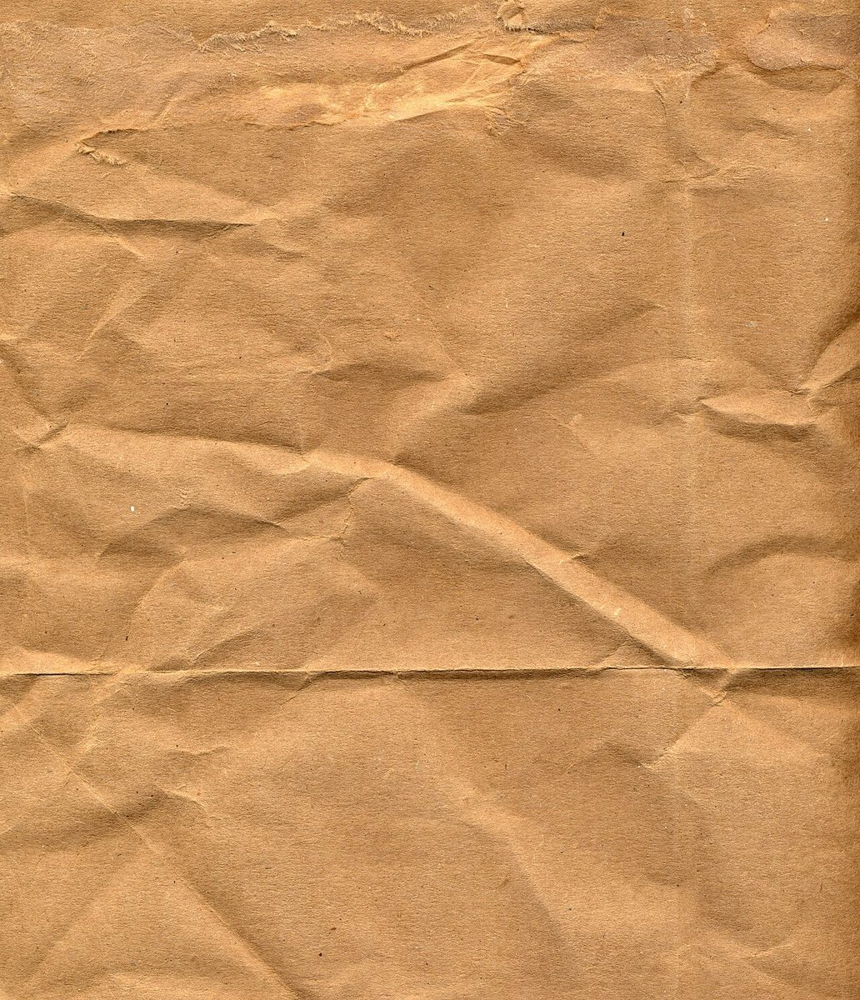
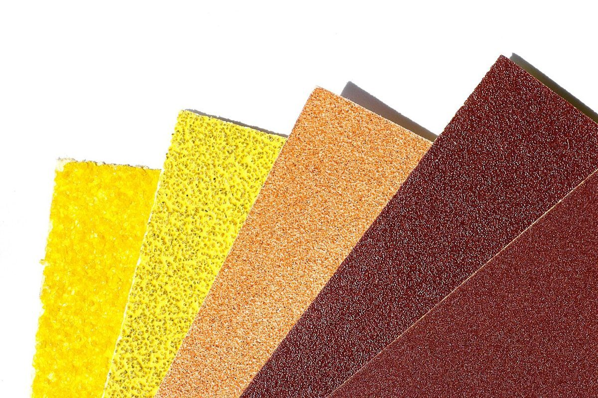
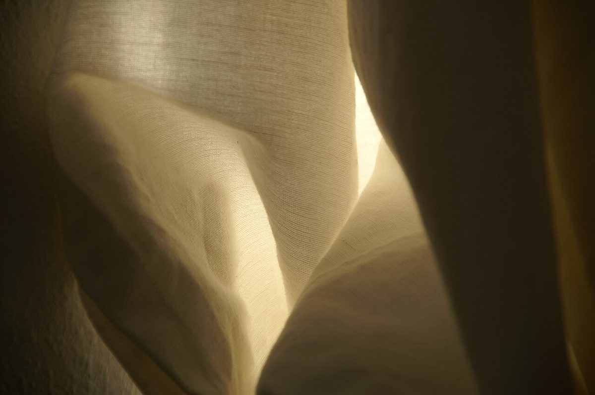

制作側の連想(お店の理念・由来とは無関係)
エッグシェルの艶見本
店名の由来は分かりません。制作側は「EGG」という綴りから、塗料の艶(つや)の呼び名のひとつ「エッグシェル」を連想しました。艶消しから全艶まで五段階あるうちの、2番目です。そこでこのページは、塗装の「艶見本」のように、つや消しの面から強い艶の面まで、色が淡いほうから濃いほうへ下りていく作りにしています。これは制作側の連想で、お店の理念や由来とは関係がありません。
下の写真は、お店や釧路市の写真ではありません。艶のちがいをイメージしやすい質感で選んだ、国外または撮影地不明のフリー素材です。
01
艶消しFLAT
光をほとんど返さない、しずかな面。指のあとも、細かなきずも目立ちにくい仕上がりです。




02
エッグシェルEGGSHELL
ほのかに光る、卵の殻ほどの艶。屋号の「EGG」から制作側が連想した塗装用語で、このサイトの題名の元です。


03
サテンSATIN
やわらかく光がすべる、なめらかな艶。艶消しよりも、色がすこし深く見えます。

04
セミグロスSEMI-GLOSS
光の輪郭がはっきりしてくる段階。面のかたちや丸みが、くっきり浮かびます。


05
全艶GLOSS
周りのものが映りこむほどの、いちばん強い艶。光がまっすぐ跳ね返ります。


ご案内
お店のこと(確認できたものだけ)
| 所在地 | 〒085-0015 北海道釧路市北大通1丁目2 |
|---|---|
| 電話 | 0154-61-5555 |
| 営業時間 | 準備中 |
| 定休日 | 準備中 |
| ご予約 | 準備中 |
| 駐車場 | 準備中 |
| SNS | Instagram @egg_cafe.kushiro |